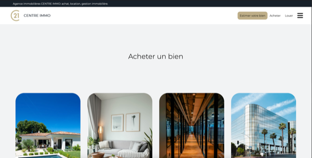

Site pour une agence immobilière
Description du projet
Le site centre immo est un projet qui a été réaliser en php par groupe de 3 afin de permettre aux utilisateurs de consulter les maisons, les appartements et les terrains nus qu'ils peuvent acheter ou louer.
Le déroulement du projet
-Réalisation des bases du site
-Répartition des tâches
-Création des fonctionnalités du site
-Réalisation d'une compte-rendu

Compétences mise en oeuvres :
-Gérer le patrimoine informatique
-Répondre aux incidents et aux demandes d’assistance et d’évolution
Liens utiles :
- lien vers le github